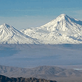
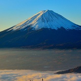
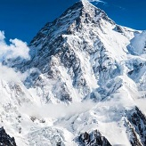
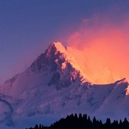

Арара́т — вулканический массив на востоке Турции; самая высокая вершина Турции и Армянского нагорья.

Фудзия́ма — действующий стратовулкан на японском острове Хонсю в 90 километрах к юго-западу от Токио.

Чогори́— вторая по высоте горная вершина Земли (после Джомолунгмы).

Канченджа́нга — горный массив в Гималаях. Главная вершина массива.